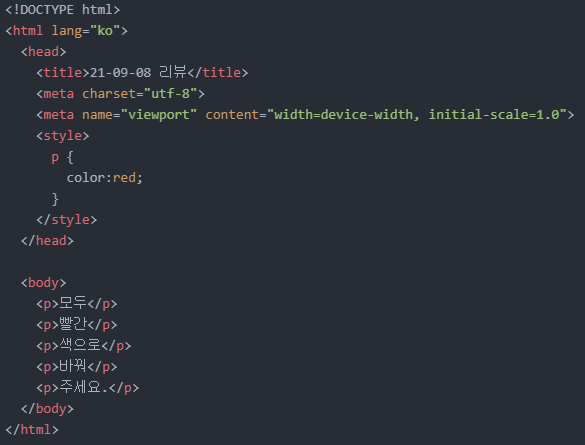
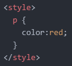
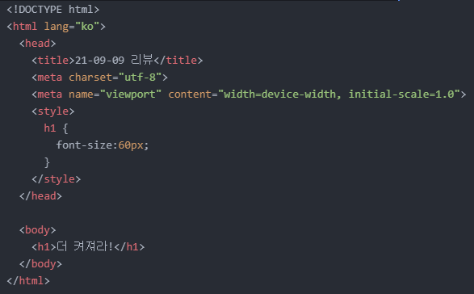
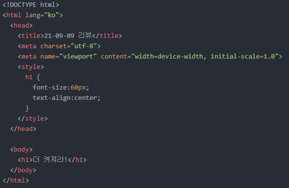

- 오개념 바로잡기
- CSS의 기본
- 텍스트 크기 조정 및 정렬
오늘의 첫 번째 목표는 '오개념 바로잡기'입니다.
바로 어제, CSS의 본질을 알아보면서 언급한 내용을 그대로 가져와보겠습니다.
|
이전에 텍스트 색상을 변경하고 싶으면 'style="color:blue"'와 같이 'style' 속성을 이용하면 된다고 했었습니다. 그런데, 이 방법에는 명확한 단점이 존재합니다. 1,000개의 태그 내에 쓰인 텍스트들의 색상을 변경해야 할 때 일일이 전부 변경해줘야 한다는 것입니다. 하나에 5초가 걸린다고 하면 최소 5,000초..그러니까 83.33분 정도가 소요됩니다. 엄청난 끈기가 있어야 된다는 뜻이죠. 그런데 이를 단 5초 만에 해결할 수 있다는 것입니다. CSS를 이용한다면 말이죠. |
CSS를 접하고 나니, 위 설명이 순 엉터리였음을 알 수 있었습니다.
알고 보니, 'style="color:blue"'와 같은 속성도 CSS의 기능이었습니다.
어제 'head' 태그 내에 'style' 태그를 적용하고 그 안에 또 'p {color:red;}'와 같은 코드를 작성했었죠?
이 코드를 내가 적용하고자 하는 태그 내부에 적용하고자 할 때 필요한 속성이 'style="color:blue"'와 같은 속성이었습니다.
이 말은 즉, HTML만을 이용하여 웹 페이지를 만들고자 했던 목표를 달성하지 못했다는 뜻이기도 합니다.
조금은 아쉽지만.. 그래도 오개념을 잡는 것은 매우 중요합니다.그럼 본격적으로 CSS에 대해서 알아봅시다.

어제 위와 같은 코드를 작성했었습니다.

그 중 'style' 태그를 사용한 코드를 보겠습니다.
'style' 태그를 사용하여 웹 페이지에 특정 효과를 주고자 할 때 필요한 코드 구조입니다.
만약 'style' 태그와 'color:red;'라는 효과만 있다면, 이 효과를 어디에 주라는 것인지 도저히 알 수 없습니다.
그런데 'p'라는 문자와 중괄호({})를 포함시켰더니 'p' 태그가 적용된 모든 텍스트에 빨간색을 입히는 효과가 적용되었습니다.
즉, 'p {}'의 역할은 내가 주고 싶은 효과를 어디에 줄 것인지 선택할 수 있도록 해줍니다.
그리고 이 'p'를 '선택자(Selector)'라고 부릅니다.
예시를 'p'로 든 것이지, 선택자가 될 수 있는 것들은 많습니다.
사용할 수 있는 태그는 매우 많으니까요.
선택자를 통해 주고자 하는 효과 즉, 'color:red;'와 같은 것을 '선언(Declaration)'이라고 부릅니다.
또 'color'와 같은 것들을 '속성(Property)'으로, 'red'와 같은 것들을 '속성값(Property Value)'으로 부릅니다.
이때 세미콜론(;)은 각각의 선언을 구분해 주는 역할을 하므로, 하나의 선언을 작성했으면 반드시 세미콜론을 붙여주셔야 합니다.그럼 이제 CSS를 이용하여 다음 목표인 '텍스트 크기 조정'에 대해 알아보겠습니다.
HTML만을 이용해 텍스트 크기를 조정하기 위해선 'h' 태그를 사용해야 했습니다.
그런데 'h' 태그는 'h1~6'까지가 전부였죠.
그 중 'h1' 태그를 적용할 때의 텍스트가 가장 컸었죠.
그런데 여기서 크기를 더 키울 수도, 줄일 수도 있게 되었습니다.
이젠 CSS가 있으니까요.방법은 간단합니다.
선택자는 'h1'으로, 선언은 'font-size:??px'와 같이 작성해 주시면 됩니다.
이때 ??에는 원하는 크기에 해당하는 숫자를 넣어주시면 됩니다.
'px' 속성값 외에도 '%', 'larger' 속성값 등 여러 속성값들을 사용할 수 있지만 저는 그중에서도 'px' 속성값을 사용한 것입니다.
이 웹 페이지와의 간섭을 막기 위해 새로운 페이지를 만들어 'iframe' 태그를 이용해 삽입해보겠습니다.
삽입한 페이지 코드는 아래와 같습니다.

이번에는 텍스트 정렬을 해보려고 하는데 사실 첫 시간에 이미 해봤습니다.
'text-align' 속성과 'center'/'left'/'right'와 같은 속성값을 적용시켜주면 됩니다.
지금 생각해 보니 두 번씩이나 CSS의 힘을 빌렸었군요..
어쨌든 'font-size' 속성 외에 text-align' 속성과 'center' 속성값을 적용시켜보겠습니다.
삽입한 페이지 코드는 아래와 같습니다.

그럼 오늘은 여기까지만 하겠습니다.
내일도 화이팅!